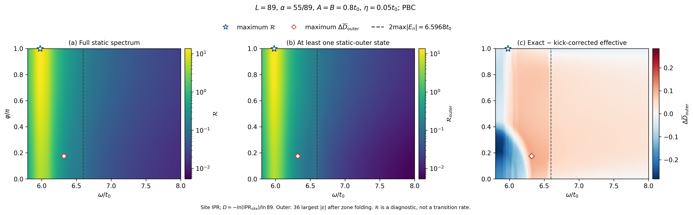
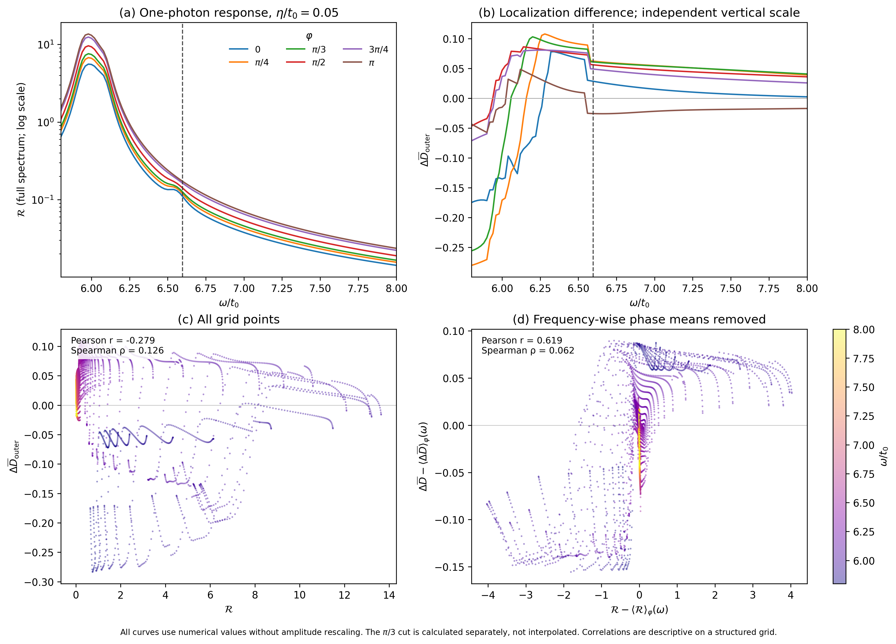
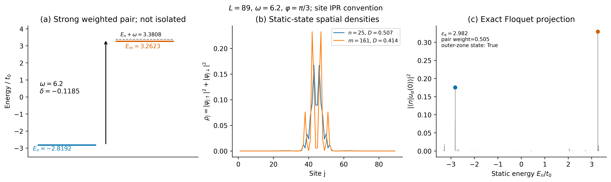
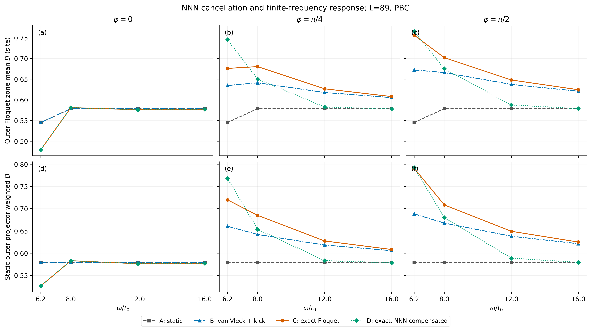
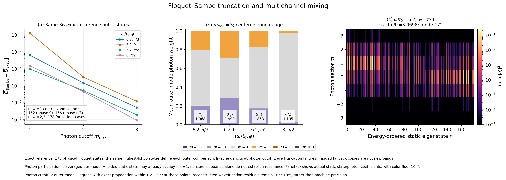

L=89，111×81参数网格及额外111个π/3切线点。以下图片均由真实数据绘制，提供≥300DPI PNG及矢量PDF。
存在一光子混合通道，但裸响应与空间局域化差值的峰值和相位规律不同；抵消首阶NNN项后低频增强仍保留。当前数据不证明新相变。
完整中文科研报告（含6问回答及误差） · 数据字典 · 复现说明 · 全网格验证 · NPZ字段表
主网格M64；最敏感的抽样点误差约4.77×10⁻⁴，追加M512后降为1.10×10⁻⁷。近简并基底敏感性及抽样限制见报告。幺正残差不等于IPR误差上界。




